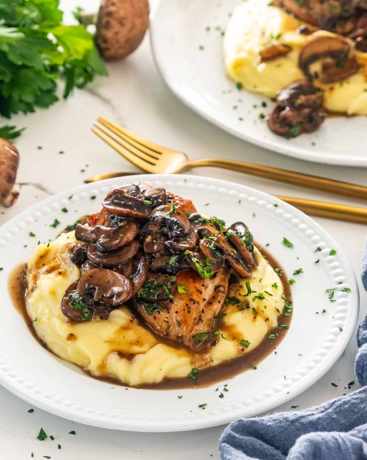

Chicken Madeira

Chicken Madeira featuring a rich mushroom and wine sauce is made with simple every day ingredients. In under an hour you can have restaurant quality flavor on the dinner table.
1 poundchicken breasts (skinless and boneless, about 3 to 4)- salt and pepper to taste
3 tbspolive oil1 poundcremini mushrooms, cleaned and sliced3cloves garlic, minced2 cupsdry red wine (Madeira wine)1 cupchicken broth1 tbspflour2 tbspbutter2 tbspfresh parsley, finely chopped
Season the chicken breasts generously with salt and pepper.
Heat 2 tbsp of the olive oil in a large skillet or a saucepan over medium-high heat. Add the chicken breasts to the skillet and cook for about 3 to 4 minutes per side until they get to get golden brown. More time may be needed depending on the thickness of your chicken breasts. Remove the chicken breasts from the skillet and set aside.
Add the remaining 1 tablespoon of olive oil to the skillet and add the mushrooms. Season the mushrooms with salt and pepper then cook for about 8 minutes until the mushrooms start to brown. Stir occasionally.
Add the garlic, wine and chicken broth to the skillet and stir. Season with more salt and pepper as needed. Reduce heat and cook for another 20 minutes until the sauce thickens a bit and reduces. If you find that the sauce hasn’t thickened enough, you can take about a ladle of the liquid from the pan and whisk it with a tbsp of flour, then pour it back into the saucepan and stir, the sauce should thicken almost instantly. Add the butter and stir, this will give the sauce a nice glossy color.
Add the chicken breasts back to the pan and cook for another 5 minutes.
Garnish with fresh parsley and serve over mashed potatoes.